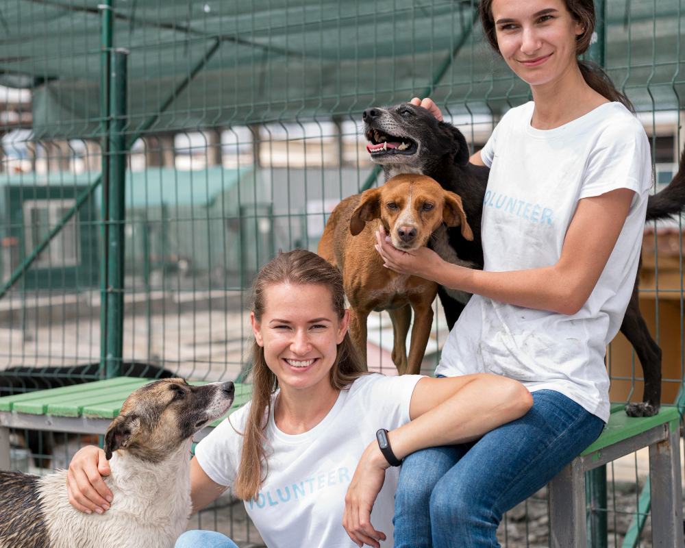

Sobre Nosotros
Patitas Felices nace de la convcción de que para efectuar una transformación real, es escencial comprometerse de forma directa.
Somos un equipo de personas impulsadas por la empatía hacia los animales, reconociéndolos como nuestros semejantes dedbido a su capacidad para experimentar alegría, dolor y sufrimiento. Nuestra misión consiste en inspirar un cambio de mentalidad que repercuta positivamente en la crítica situación que enfrentamos, vinculada a la sobrepoblación, el abandono, la crueldad y la indiferencia que afectan a millones de perros y gatos en nuestro país.